Questo pannello permette all’operatore di applicare diverse tipologie di lavorazione a un pezzo designato.
Alla sua apertura, viene visualizzata la seguente schermata:
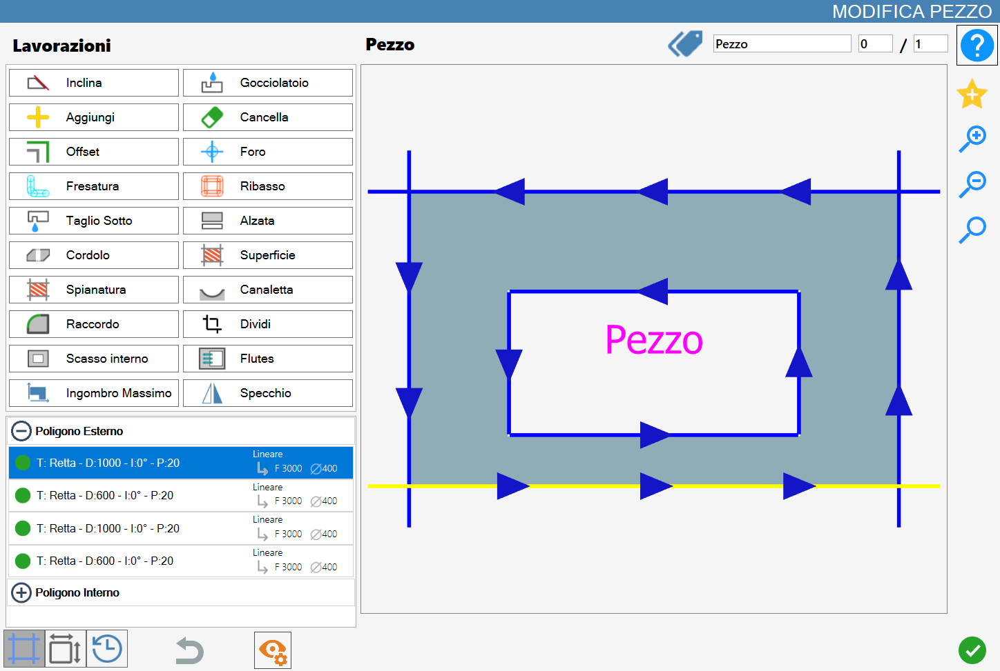
Alcune delle funzioni che verranno descritte in questa sezione sono presenti anche sulla pagina principale di Parametrix, ma con una differenza.
Se un pezzo, o un taglio, viene modificato attraverso il pannello ‘Modifica Pezzo’, tutti i pezzi della riga selezionata verranno modificati di conseguenza con le stesse lavorazioni.
Al contrario, se la lavorazione viene impostata dall’area di lavoro, verrà modificato solo il pezzo selezionato.
Tipologie di lavorazione
Tramite il pannello “Modifica Pezzo“ è possibile applicare una o più tra le seguenti lavorazioni, che verranno singolarmente illustrate in seguito. In particolare, Parametrix permette di:
 | Inclina | 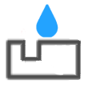 | Gocciolatoio |
 | Aggiungi |  | Cancella |
Offset | Foro | ||
 | Fresatura | 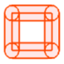 | Ribasso |
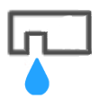 | Taglio Sotto - (Opzionale) | Alzata | |
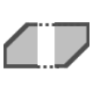 | Cordolo |  | Superficie - (Opzionale) |
| Spianatura - (Opzionale) | Canaletta - (Opzionale) | |
 | Raccordo |  | Dividi |
Scasso interno | 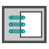 | Flutes | |
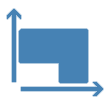 | Ingombro Massimo - (Opzionale) |  | Specchio |
A seconda della combinazione di optional, alcuni di questi pulsanti possono non essere presenti.
Lista dei tagli
I tagli del pezzo verranno visualizzati nella sezione inferiore a sinistra di questo pannello.
Tramite apposita suddivisione, viene indicato se un taglio appartiene al perimetro esterno oppure ad uno dei perimetri interni. Grazie a questa classificazione, è possibile mostrare/nascondere la lista dei i tagli appartenenti ad un poligono premendo sull’icona della sezione corrispondente.

Come si può vedere dall’immagine, in ogni riga vengono mostrate alcune informazioni riguardo al taglio che rappresentano. In particolare:
 | Gestisci lavorazione |
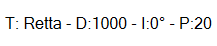 | Informazioni del taglio
|
 | Informazioni della lavorazione
|
Queste informazioni cambiano in base alla tipologia del taglio che descrivono. Non sempre vengono mostrate tutte le informazioni.
Ad esempio, per i fori è possibile visualizzare esclusivamente la la penetrazione nel materiale.
Se su una parte del pezzo non è presente nessun taglio, viene indicato con la dicitura “Nessuno“.
Anteprima
La parte principale della funzionalità "Modifica Pezzo" mette a disposizione dell'operatore un'anteprima completa del pezzo selezionato, mostrando tutte le lavorazioni attualmente applicate.

È possibile interagire con il pezzo visualizzato semplicemente muovendo l’anteprima, oppure utilizzando i pulsanti per modificare lo zoom che si trovano alla sua destra.
Inoltre, in questa sezione sono presenti altre funzionalità che di seguito andremo a descrivere.
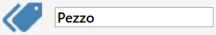 | Marca |
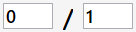 | Numero dei pezzi |
 | Aggiungi preferito |
Selezione dei tagli
È possibile selezionare un taglio direttamente dall'anteprima, osservando il cambiamento del suo colore in giallo a conferma della selezione, oppure selezionare la corrispondente riga all'interno dell'elenco dei tagli disponibile nel menù in basso a sinistra.
Cliccando sul bollino verde presente a sinistra di ogni elemento della lista, sarà possibile disabilitare il relativo taglio.
In questo caso il bollino diventerà rosso e l’anteprima del pezzo verrà aggiornata con il colore del taglio disattivato che muterà in grigio.
Nel seguente esempio sono stati disabilitati i primi due tagli del poligono esterno del pezzo:
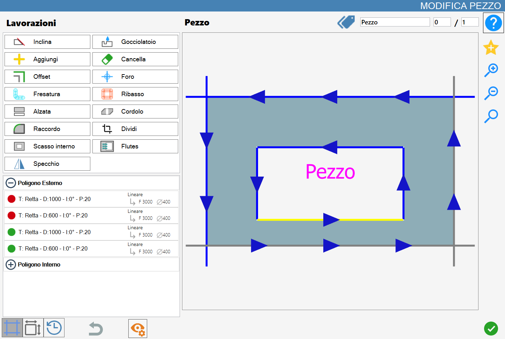
Barra inferiore
In questa barra sono messe a disposizione alcune funzionalità che semplificano la fruizione delle lavorazioni di Modifica Pezzo:

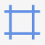 | Tagli |
Lati | |
 | Cronologia |
 | Annulla |
Modifica visuale |
Cronologia
Permette di visualizzare tutte le modifiche applicate al pezzo corrente e, se necessario, consente di ripristinare il pezzo corrente ad uno stato precedente.
Se sono state applicate modifiche al pezzo corrente, queste verranno visualizzate nell'elenco a sinistra:
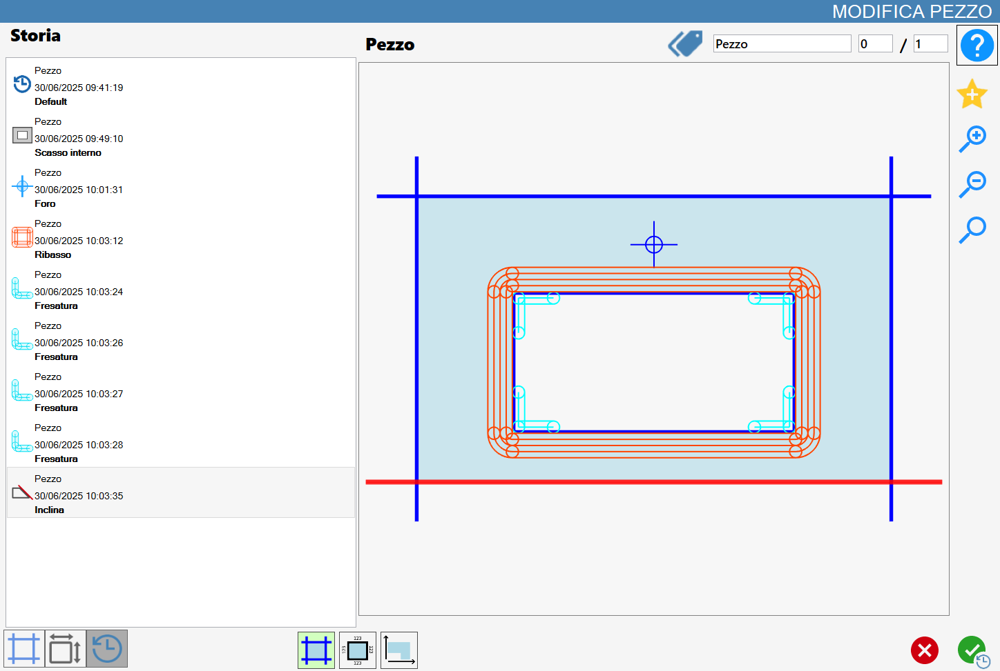
Nel menù a sinistra vengono visualizzati gli stati della lavorazione del pezzo.
 | Stato della lavorazione
|
Lo stato del pezzo corrente senza modifiche è chiamato "Default".
Selezionando una voce dal menu a sinistra, viene mostrata l’anteprima corrispondente al momento di applicazione della lavorazione.
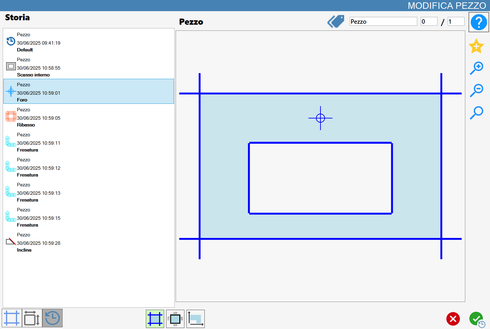
Premere il tasto di conferma, farà si che il pezzo venga ripristinato allo stato selezionato. In questo modo, le modifiche successive a quella selezionata vengono rimosse.
Nella parte inferiore del pannello sono visualizzati tre pulsanti di utilità per la visualizzazione del pezzo nell’anteprima:
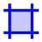 | Visualizza tagli |
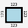 | Visualizza misure |
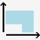 | Visualizza angolo |
Modifica Visuale
Questa modalità mette a disposizione dell’operatore alcuni pulsanti visibili solo nel momento in cui la “modifica visuale“ è abilitata.

Ognuno dei seguenti pulsanti abilita o disabilita uno dei seguenti elementi del pezzo:
 | Tagli |
 | Fori |
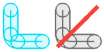 | Fresature |
 | Ribassi |
Frecce sui tagli | |
 | Nome del pezzo |
 | Dynamic Tags |